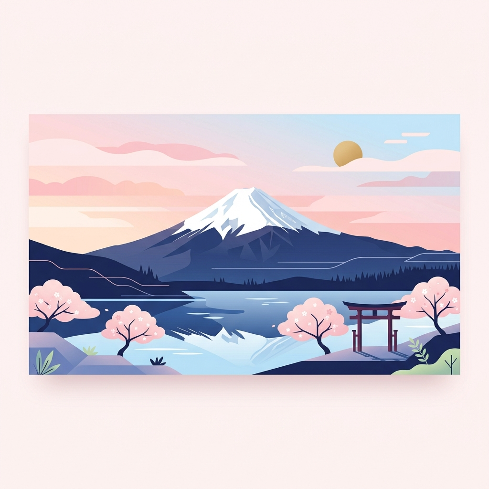

Day 1（8/19 三）：桃園出發與押上整備
本日預估現金：¥5,700
本日刷卡：自行預估
本日提醒：抵達押上飯店後請確實整理並檢查裝備。兌換零錢非常重要，上山及下山共有 19 個收費廁所，請備妥 ¥5,700 的硬幣零錢（需付現）。
⏱️ 10:50（台灣）
桃園國際機場 起飛（樂桃 MM626）
搭乘樂桃航空 MM626，桃園機場第一航廈（T1）10:50 起飛，飛往東京成田機場第一航廈（T1），日本時間約 15:20 抵達（航程約 3.5 小時，日本較台灣快 1 小時）。
✈️ 樂桃 MM626 桃園 → 成田，約 3.5 小時 🗺️
⏱️ 15:20（日本）
成田機場入境
抵達成田機場，辦理入境與提領行李。
🛂 出關＋提領行李，約 1 小時
⏱️ 16:20
與小魚與烏龜會合
完成入境、提領行李後，於機場入境大廳會合，尋找小魚與烏龜後一同前往飯店。
🚗 旅行社專車 成田機場 → Keisei Richmond Hotel Tokyo Oshiage，約 70 分鐘 🗺️
⏱️ 17:30
押上京成里士滿酒店 check-in
入住押上京成里士滿酒店（Keisei Richmond Hotel Tokyo Oshiage）。安頓行李並準備檢查登山裝備。
約 18:30
晚餐（自理）
於飯店周邊自行覓食，費用自行預估。
自行預估
⏱️ 20:00～21:00
裝備整理與糧食購買
進行第二次完整裝備檢查。如缺裝備可在附近購買，並備齊上山行動糧與飲水。可刷卡支付。
自行預估
約 21:15
換取上山硬幣
換取硬幣作為富士山廁所過路費（上山+下山預計有 19 次付費點使用）。
預估：¥5,700 (現金)
Day 2（8/20 四）：出發富士山！五合目至本八合目
Sheet固定現金：¥14,400約 07:30
東京押上飯店早餐
享用飯店早餐後辦理退房，準備啟程前往富士山，搭車車程約需 2.5 小時。
🚗 包車 押上 → 富士山五合目，約 2.5 小時 🗺️
⏱️ 11:30 正式起登
富士山五合目
停留約 60 分鐘適應高度。可在此處進行金剛杖烙印、寄明信片，以及前往五合目的「小御嶽神社」參拜並收集首枚御朱印，並於 11:30 正式起登上山。
- 💵 入山維護費：¥4,000 (現金)
- ✉️ 明信片 (需寫中文地址+Taiwan)：¥300 (現金)
- 📮 郵票：¥100 (現金)
- 🦯 金剛杖木板烙印 (預計烙印 18 至 20 個點)：¥10,000 (現金)
- ⛩️ 御朱印｜冨士山小御嶽神社：¥300（山梨縣官方觀光資料）
固定項目：¥14,400 (現金)
⛩️ 御朱印：¥300
約 12:20
六合目安全指導中心
海拔 2,390M。自五合目起登，徒步約 50 分抵達。
約 13:45
七合目 Tomoe館（トモエ館）
海拔 2,700M。自六合目徒步約 70 分。
約 15:25
八合目 太子館
海拔 3,040M。自七合目徒步約 80 分。
⏱️ 17:00～18:00
本八合目山屋 富士山Hotel
海拔 3,370M。自八合目徒步約 80 分，預計 17:00～18:00 抵達山屋。抵達後請遵照防呆整理指南，以利隊伍在狹小的山屋內快速安頓與休息。
🚨 本八合目山屋安頓儀式 (防呆順序)
1️⃣ 穿上禦寒外套
2️⃣ 打開鞋帶
3️⃣ 收起登山杖
4️⃣ 鞋與杖裝入膠袋
5️⃣ 濕衣物裝空大袋
6️⃣ 包包放床邊
7️⃣ 袋子掛在掛勾
8️⃣ 床上躺平休息 10 分鐘
⏱️ 20:00
晚餐與就寢
吃晚餐後建議在 20:00 前準時就寢，以利半夜起床登頂。
Day 3（8/21 五）：攻頂富士山 (劍峰) 與溫泉慶功宴
Sheet固定現金：自行決定
下山叮嚀：在五合目準備上接駁車時，請換上隨身攜帶的休閒拖鞋，並用塑膠袋將髒登山鞋緊密包好，保持車內乾淨。
⏱️ 02:00
起床準備
整理裝備並吃早餐、補充水分。高山症藥物僅依行前醫囑使用；若出現頭痛、噁心、頭暈等症狀，應停止上升、休息並評估下撤。
⏱️ 03:00
起登出發
頭戴頭燈，跟著人群缓步向山頂進發。
約 03:50
九合目
海拔 3,600M。自本八合目 富士山Hotel 徒步約 50 分。
⏱️ 07:30～08:00
開始下山
沿吉田線原路下降，預計 13:30 抵達五合目登山口。砂石路滑，請戴護膝並注意腳踝。
約 08:50
下江戸屋（Lower Edoya 8th Station）
下山道八合目山屋。自山口屋沿下山道徒步約 50 分。
約 10:40
七合目公衆廁所（吉田下山道）
下山道七合目 2,630M。自下江戸屋徒步約 90 分（砂石路段）。
約 11:40
六合目安全指導中心
海拔 2,390M。自七合目公衆廁所徒步約 30 分。
⏱️ 13:30
返抵五合目登山口（吃中餐）
自六合目安全指導中心徒步約 40 分，預計 13:30 抵達吉田口登山道五合目並享用中餐（旅行社招待，不需自付）。上專車時換上乾淨拖鞋，登山鞋使用塑膠袋包好。
中餐：旅行社請客（免費）
⏱️ 15:00
五合目集合出發
於五合目集合，搭乘旅行社專車前往河口湖溫泉飯店。
🚗 旅行社專車 五合目 → 河口湖 花水庭，約 60 分鐘 🗺️
⏱️ 18:00
花水庭溫泉旅館
抵達位於河口湖的花水庭溫泉旅館。泡湯洗去一身疲憊，並舉辦登頂慶功宴！
Day 4（8/22 六）：河口湖單車環湖與極致美景
Sheet固定現金：¥8,000-9,000
刷卡：支付方式依店家
⏱️ 07:30
花水庭溫泉旅館 宴席早餐
早上約 07:30 享用溫泉旅館宴席早餐，並於 08:30～09:00 辦理退房後啟程。
約 09:00
NBC 租電動單車
於 NBC（船津）租借電動單車，開始河口湖環湖一日遊。
租電動單車：¥4,000 (現金)
約 09:40
大石公園
湖北岸花海公園，薰衣草與波波草（掃帚草）花海，遠眺富士山。
約 10:30
產屋崎神社
遠眺富士山的絕佳視角。現場無獨立社務所，未查到可於此處領取的獨立御朱印，因此不列入御朱印預算。
約 11:00
天上山纜車（富士見台站）
搭乘～富士見台～富士見台展望台鳥瞰河口湖與富士山。
纜車往返：¥1,000 (現金)
⏱️ 12:00 左右
午餐 (甲州ほうとう小作 河口湖店)
品嚐山梨縣名物餺飥麵 (Hoto)。此店僅收現金。
預估：¥1,000-2,000 (現金)
約 13:15
⛩️ 御朱印：¥500
約 14:00
八木崎公園與沿湖遊覽
漫步於八木崎公園，欣賞湖畔風光，隨後還車。
⏱️ 16:00 左右
晚餐：河口湖美食餐飲（備用方案）
避開主店排隊人潮，改以備用方案店面為主。付費方式與預估如下：
🥢 河口湖晚餐（首選＝離八木崎公園最近）(Sheet固定現金：¥2,000)
- ⭐ ほうとう蔵 歩成 河口湖店（船津，南岸，離八木崎公園最近）：黃金餺飥麵，可刷卡或電子支付 — 首選
- 🔸 食事處 湖波 (こなみ)（浅川，北岸，需繞湖）：富士山景餐廳，可刷卡、PayPay或現金 — 備案
- 🔸 河口湖紅葉亭 (もみじ亭)（河口，東北岸，最遠）：手作味噌餺飥，支援信用卡或現金 — 備案
自行預估
🚌 高速巴士 河口湖 → 東京淺草，約 2–2.5 小時 🗺️
⏱️ 20:00
入住 Henn na Hotel Tokyo Asakusa Tawaramachi Premier
抵達東京淺草，辦理海茵娜飯店入住手續。
Day 5（8/23 日）：小江戶川越古街與秋葉原購物
本日預估現金：¥4,220
餐食購物：自行預估
⏱️ 07:50
從 Henn na Hotel 出發
從淺草田原町 海茵娜飯店（Henn na Hotel Tokyo Asakusa Tawaramachi Premier）出發，步行前往 YAYOI軒享用早餐，隨後啟程前往川越。
🚶 步行 Henn na Hotel → YAYOI軒 淺草田原町店，約 3 分鐘 🗺️
08:00～09:00
早餐 (YAYOI軒 淺草田原町店)
於 YAYOI軒（やよい軒）享用精緻傳統日式朝食約 1 小時，可於自助點餐機刷卡或付現。
自行預估
🚃 田原町 →（地鐵＋東武東上線，¥1,110／IC）川越市，約 90 分鐘 🗺️
⏱️ 11:00 - 13:00
川越冰川神社與老街探索
參拜川越總鎮守冰川神社、體驗釣鯛魚籤，並至菓子屋橫丁享用地瓜小點心。
- ⛩️ 御朱印｜川越冰川神社：¥500（通常書置版；2026 價格查證）
- 🍠 菓子屋横丁、芋チップス・クロッフル専門店：Sheet 未列固定金額，依現場自行決定。
點心：自行決定
⛩️ 御朱印：¥500
⏱️ 13:00
午餐 (林屋鰻魚飯)
享用川越招牌烤鰻魚飯（不吃海鮮亦有牛肉套餐可選），支援刷卡或現金付費。
餐費：自行預估
約 14:00
川越星巴克、時之鐘與熊野神社
造訪川越鐘つき通り星巴克、遊覽木造鐘樓「時之鐘」，前往熊野神社洗錢與祈福。
- ⛩️ 御朱印｜川越熊野神社：¥500（8/23 為己巳之日，通常御朱印會加蓋當日印；神社官方公告）
參拜/採買：自行決定
⛩️ 御朱印：¥500
🚃 回程 川越市 →（東武＋山手線，¥1,110／IC）秋葉原，約 90 分鐘 🗺️
⏱️ 18:00 - 21:00
秋葉原購物與美食
於 Yodobashi 大樓享用晚餐，隨後逛 Animate、唐吉訶德與藥妝店。大部分商店皆可刷卡。
🥢 秋葉原美食備用方案（費用自行預估）
- 🍳 鶴橋風月 (大阪燒) - 可刷卡
- 🥩 焼肉牛兵衛寿庵 (和牛) - 可刷卡
- 🐷 友都八喜炸豬排店 - 可刷卡
- 🥩 Pepper Lunch 鐵板飯 - 可刷卡/電子
- 🍛 蘋果樹 (蛋包飯) - 可刷卡
晚餐：自行預估
購物：自行預估
🚃 秋葉原 →（地鐵，¥230／IC）淺草 田原町 飯店，約 15 分鐘 🗺️
Day 6（8/24 一）：江之島海岸線與鎌倉古城巡禮
Sheet固定現金：¥4,580
餐食購物：自行預估
⏱️ 07:00
從 Henn na Hotel 出發前往江之島
起床出門，從淺草田原町 海茵娜飯店（Henn na Hotel Tokyo Asakusa Tawaramachi Premier）出發，前往湘南江之島。
🚃 田原町 →（銀座線→宇都宮線→湘南單軌，¥2,360／IC）湘南江之島，約 2 小時 🗺️
江之電（購買一日券）
抵達江之島後，於江之電車站購買江之電一日乘車券（僅收現金）。
江之電一日券：¥800 (現金)
🚃 江之電 江之島 → 七里濱，約 10 分鐘 🗺️
⏱️ 09:30
早餐 (bills 七里濱店)
一邊欣賞無敵海景一邊享用頂級鬆餅早餐，可刷卡或付現。
早餐：已預約，費用自行預估
🚃 江之電 七里濱 → 江之島，約 10 分鐘 🗺️
⏱️ 11:00
青銅鳥居
江島神社參道入口的青銅鳥居，開始江之島散策。
⛩️ 御朱印：¥300
海蠟燭展望燈塔 + 電梯
搭乘電梯登上江之島海蠟燭（Sea Candle）展望燈塔，鳥瞰海岸。
展望燈塔+電梯：¥1,000 (現金)
⛩️ 御朱印：¥300
弁財天仲見世通
江之島參道商店街，邊走邊吃、逛土產。
紀之國屋本店
江之島老舖，招牌女夫饅頭等名物。
朝日堂 蝦蝦仙貝
あさひ本店 現壓丸燒章魚仙貝（たこせんべい），江之島必吃。
🚃 江之電 江之島 → 長谷（鎌倉大佛），約 20 分鐘 🗺️
⏱️ 16:00
鎌倉大佛殿 高德院
步行參拜露天大佛並參觀大佛內部與收集御朱印。
- 🎟️ 大佛門票：¥300 (現金)
- ⛩️ 御朱印｜書置版：¥300，受理至 16:30；御朱印帳手寫版 ¥500，受理至 15:00。行程 16:00 抵達，預算以書置版計（高德院官方 FAQ）。
門票：¥300
⛩️ 御朱印：¥300
🚃 江之電 長谷 → 鎌倉，約 5 分鐘 🗺️
中餐 (鎌倉釜飯 kamakama)
於鎌倉享用在地釜飯（鎌倉釜飯 かまかま）。
餐食：自行預估
Giraffa Curry Pan 鎌倉小町通り店
ジラッファ 現炸起司咖哩麵包。
Tomoya 鎌倉小町店
ともや 大佛造型雞蛋糕。
Kokuriko 御成通り店（法式薄餅）
コクリコ 法式薄餅（可麗餅）。
豐島屋 鎌倉本店
鴿子餅乾（鳩サブレー）本店，採購伴手禮。
逛 小町通り 商店街
漫步小町通老街，邊走邊逛、採買。
購物/點心：自行預估
🚃 鎌倉 →（橫須賀線→東海道本線→銀座線，¥1,220／IC）淺草，約 2 小時 🗺️
⏱️ 20:00
淺草寺夜遊 + 淺草文字燒 (Tsukushi つくし)
回到淺草夜遊淺草寺，並品嚐大眾酒場風情的文字燒老店 Tsukushi（僅收現金）。本段僅夜遊，不安排領取御朱印；淺草寺與淺草神社御朱印統一於 D7 上午領取。
晚餐：自行預估
Day 7（8/25 二）：淺草巡禮與成田搭機返台
Sheet固定現金：未列
Sheet刷卡：NT$459
⏱️ 08:30
Henn na Hotel 退房與寄放行李
於海茵娜飯店（Henn na Hotel Tokyo Asakusa Tawaramachi Premier）辦理退房，並將行李寄放於櫃檯；08:45 從飯店出發。
🚶 08:45 步行 Henn na Hotel → 麥當勞，約 10～15 分鐘 🗺️
⏱️ 09:00～09:45
麥當勞早餐（淺草ROX店）
享用日式麥當勞早餐（可刷卡），預計停留 45 分鐘，09:45 離開前往淺草寺本堂。
- 🍔 早餐：Sheet 未列固定金額，依現場自行決定。
早餐：自行預估
🚶 09:45 步行 麥當勞 → 淺草寺本堂，約 10 分鐘 🗺️
🚶 11:20 步行 淺草寺本堂 → Henn na Hotel，約 15 分鐘 🗺️
⏱️ 11:35～11:45
回 Henn na Hotel 拿行李
返回海茵娜飯店（Henn na Hotel Tokyo Asakusa Tawaramachi Premier）櫃檯，取回寄放的行李；11:45 離開飯店。
🚶 11:45 步行 Henn na Hotel → 田原町駅，約 5 分鐘 🗺️
⏱️ 11:50
抵達田原町駅
攜帶行李抵達田原町站，預留約 40 分鐘作為整隊、進站與交通緩衝，12:30 按原行程前往成田機場。
⏱️ 12:30
交通：前往成田機場
從田原町搭地鐵到上野，步行至京成上野後搭乘 Skyliner 特急列車直達成田機場。
- 🚄 Skyliner 車票：NT$459（KKday 訂購）
Skyliner：NT$459 (刷卡)
🚃 田原町 →（地鐵）上野 → 步行京成上野 →（Skyliner）成田機場，約 80 分鐘 🗺️
⏱️ 13:55
抵達成田機場
辦理行李託運、出境，可在免稅店進行最後採購，準備搭機返台。
⏱️ 16:55（日本）
成田機場 起飛（樂桃 MM625）
搭乘樂桃航空 MM625，成田機場第一航廈（T1）16:55 起飛，飛往台灣桃園國際機場，台北時間約 19:40 抵達（航程約 3.5～4 小時，台灣較日本慢 1 小時）。
✈️ 樂桃 MM625 成田 → 桃園，約 4 小時 🗺️
⏱️ 19:40（台灣）
抵達桃園國際機場
平安返抵台灣桃園國際機場，結束完美的富士山七日壯遊！
行前必備裝備與確認清單
狀態將自動儲存於此瀏覽器中
爬山警示：富士山頂氣溫長年介於 0 至 5 度，風勢極強。必須採用「洋蔥式穿法」，並準備完整的防雨、防風與禦寒防護，切勿穿棉質衣物上山。
清單依據：富士登山官方網站裝備指南、山梨縣 2026 吉田路線規定。
清單依據：富士登山官方網站裝備指南、山梨縣 2026 吉田路線規定。
📂 行政與隨身證件
🥾 專業爬山裝備
🧥 禦寒與機能衣物
🩹 藥品與糧食隨身包
🏕️ 山屋過夜與緊急備品
富士山征服之旅：七天六夜日本行程指南
統整表格
富士山登頂挑戰
富士山征服之旅：七天六夜日本行程指南
旅遊總天數
7 天 6 夜
建議攜帶日幣現鈔
¥34,900-35,900
Trip Overview
七天六夜行程總覽
把每日主軸、住宿移動、重點任務與現金提醒集中在同一頁，左側可切換各日行程查看完整內容。
建議攜帶日幣現鈔
現金 ¥34,900-35,900
行程預算與花費分析表
已選現金合計：¥0
已選刷卡合計：¥0
已選台幣合計：NT$0
互動式計算機：勾選下方細項對照表中的項目，上方及側邊欄會即時更新統計金額，並自動計算下方「每日現金額度佔比」！
💰 現金與刷卡規劃 🔗 連動對照表
數字由右側「固定金額對照表」的勾選即時加總；勾選/取消項目即會更新。交通費依西瓜卡類型決定計入現金或刷卡；只有「其他預計刷卡」可自行輸入。
¥
0
→ 計入刷卡
現金
¥0
現金
¥0
現金
¥0
現金
¥0
刷卡
¥
💴 總共要帶現金
¥0
💳 預計刷卡合計（日圓）
¥0
另有台幣刷卡（Skyliner）：NT$0 — 已於線上刷卡，不含在上方日圓現金/刷卡內。
📋 Sheet 固定金額對照表
除 Sheet 明確填入金額的固定項目外，已依 2026 官方或多來源資料加入沿途各神社／寺院的御朱印費用。共 12 筆、預設合計 ¥6,200，每筆皆可獨立取消勾選；授與內容與價格仍以現場公告為準。餐食、購物與其他現場消費若 Sheet 標「自行決定」或未列金額，請自行加現金緩衝。
📅 Day 1 成田/押上
📅 Day 2 五合目/八合目
📅 Day 3 登頂/溫泉慶功
Sheet 將山頂購物、飲食、紀念品、寄信與五合目午餐列為自行決定，未納入固定合計。
📅 Day 4 河口湖一日遊
📅 Day 5 川越/秋葉原
📅 Day 6 江之島/鎌倉
📅 Day 7 淺草/成田
付款方式與額度提醒：
- 固定現金項目：D1 換零錢、D2 入山/明信片/郵票/木板烙印、D4 單車/纜車/午晚餐、D5 交通、D6 交通與海蠟燭，以及沿途各神社／寺院的御朱印估算。
- 御朱印：12 筆皆預設勾選，合計 ¥6,200；可依當日是否實際領取逐筆取消。高德院與鶴岡八幡宮另有受理時間限制，詳見 D6 行程卡。
- 彈性支出：餐食、購物、紀念品與商店街點心多數未列固定金額，請另外保留現金緩衝；Skyliner 固定為 NT$459（台幣線上刷卡）。
- 固定現金項目：D1 換零錢、D2 入山/明信片/郵票/木板烙印、D4 單車/纜車/午晚餐、D5 交通、D6 交通與海蠟燭，以及沿途各神社／寺院的御朱印估算。
- 御朱印：12 筆皆預設勾選，合計 ¥6,200；可依當日是否實際領取逐筆取消。高德院與鶴岡八幡宮另有受理時間限制，詳見 D6 行程卡。
- 彈性支出：餐食、購物、紀念品與商店街點心多數未列固定金額，請另外保留現金緩衝；Skyliner 固定為 NT$459（台幣線上刷卡）。